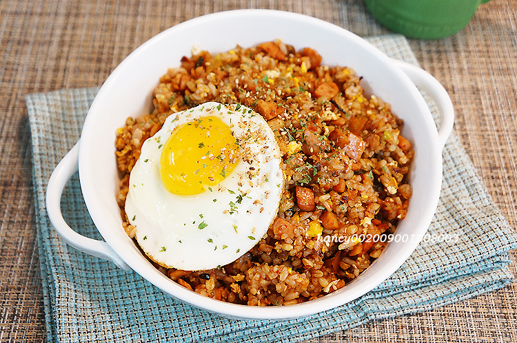

Kimchi Fried Rice (김치볶음밥)

Description
A very popular Korean comfort food, I grew up eating and loving kimchi fried rice my mother always made.
Although recipes differ by family, the recipe I present is the one my mom always made that always made me happy and love her cooking.
Ingredients
- Kimchi
- Rice
- Vienna Sausage
- Onions
- Green Onion
- Sesame Seeds
- Sesame Oil
- Vegetable Oil
- Eggs
- Mozzarella cheese
- Butter
Steps
- Dice onions, Vienna sausage, and kimchi into cubes
- Chop green onions, separating the white part from the green part
- Pour vegetable oil into a wok and let the wok heat up (to season the wok)
- Once the vegetable oil starts smoking, throw in the white part of the green onion
- Once fragrant, throw into the chopped onions
- Once the onions have been caramelized, throw the chopped sausage into the wok and toss
- Once the sausage is done cooking, throw kimchi into the wok
- Slice a thin piece of butter
- Pour some kimchi juice into the wok and mix everything together
- Once everything in the wok is cooked, pour 1-2 scoops of rice
- Toss the wok as well to balance the seasoning
- Throw in the green part of the green onions and mix vigorously
- Throw in 3 scoops of shredded mozzarella cheese and mix into the fried rice
- While the cheese is melting, crack an egg in a separate pan and make sure the yolk is still runny
- Turn off the fire and pour a splash of sesame oil into the fried rice and mix
- Once fragrant, pour everything from the wok onto a plate and place the eggs on top
- Sprinkle sesame seeds on top of the fried rice and top it off with the egg
- Grab a spoon and enjoy!